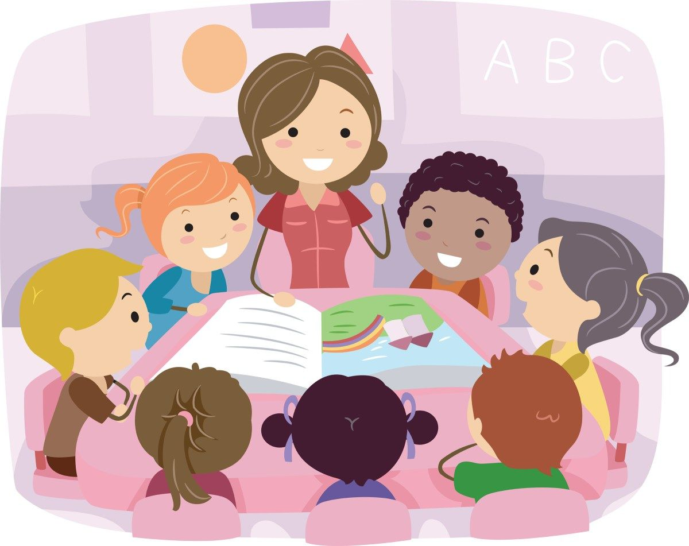

Воспитательные приемы – это педагогически оформленные действия, посредством которых на поведение и позицию обучаемого оказываются внешние побуждения, изменяющие его взгляды, мотивы и поведение, в результате чего активизируются резервные возможности человека, и он начинает действовать определенным образом.
Голосовая и эмоциональная модуляция. Учитель меняет интонацию, тембр, высоту, громкость голоса в ходе повествования. В этом случае, тон окрашивает звучащее слово разнообразными оттенками чувства и мысли: осуждения, разочарования, злобы, презрения, ненависти, любви, восхищения и т.д. Эти тонкие модуляции голоса передают все богатство интонаций речи, делают ее выразительной и эмоционально окрашенной, что хорошо для привлечения внимания.
Модуляция темпа речи. Выдерживание пауз; изменение темпа речи от медленного до скороговорки. Резкое изменение скорости речи. Однако, высокий темп речи создает трудности для достижения хорошей дикции при произнесении как согласных, так и гласных и может привести к нарушениям орфоэпического характера, к снижению информативной ценности высказывания. Чтобы этого не произошло, требуются хорошая натренированность артикуляции и умение следить за своей речью с точки зрения оптимального (наиболее подходящего) темпа. Также используется для привлечения внимания
Прерывание речи, использование догадок. Прерывание речи на словах, достаточно очевидных с требованием произносить их вслух тем, кто догадался, на каком слове прервана речь. Активность обучающихся поощряется словесно или даже отметками. Прием позволяет удерживать внимание учеников, стимулируя их слушать и проявлять инициативу (в завершении высказывания), что играет роль также в создании доверительной атмосферы.
«Истории о себе»: этот прием используется, когда педагог хочет, чтобы обучающиеся получили больше информации друг о друге и лучше понимали друг друга. Каждый может сочинить историю о себе и попросить друзей проиграть ее как маленький спектакль; Главная цель приема - создание атмосферы доверия в классе.
«Провалы памяти». Якобы забывание достаточно очевидных для класса элементов сообщения: дат, имен, терминов, названий и т.д., - с просьбой помочь вспомнить, обязательное поощрение активных. Прием позволяет удерживать внимание обучающихся, позволяет им проявлять инициативу.
Жестикуляция. Жестикуляция педагога является для учеников одним из индикаторов его отношения к ним. Жест обладает свойством делать тайное явным, о чем учитель всегда должен помнить. Движения учителя — своеобразная “увертюра” к уроку. Своей жестикуляцией он с первых минут создает определенный настрой в классе. Если движения нервные, порывистые, “срывается злость” на предметах, то дети готовятся к тому, что “достанется” и им. Вместо готовности к уроку возникает состояние напряженного ожидания неприятностей. Этот прием требует осторожности, однако он хорошо подходит как для создания комфортной, доверительной атмосферы в классе, так и ее поддержания, а также при должном качестве исполнения способствует концентрации внимания учеников на учебной деятельности.
Эхо. Преподаватель прерывает рассказ буквально на полуслове и требует от любого обучающегося повторить последнее предложение без искажений: «Как эхо». Если ученик справился, следует поощрение. Прием позволяет удерживать внимание, но также подходит и для смены деятельности, например, после долгой письменной работы ученикам предлагается повторить основные положения темы урока за учителем.
«Общаться по правилам»: на период выполнения творческого задания устанавливаются правила, регламентирующие общение и поведение обучающихся и определяющие, в каком порядке, с учетом каких требований разрешается вносить предложения, дополнять, критиковать, опровергать мнение товарищей. Подобные предписания в значительной мере снимают негативные моменты общения, защищают «статус» всех его участников;
«Эстафета»: педагог организует деятельность так, чтобы в ее ходе взаимодействовали учащиеся из разных групп. Прием подходит для формирования и сплочения коллектива.
«Взаимопомощь»: деятельность организуется таким образом, чтобы от помощи обучающихся друг другу зависел успех совместно организуемого дела; Прием направлен на развитие доверительных отношений между учениками, сплочение коллектива.
«Акцент на лучшее»: педагог в разговоре с обучающимися старается подчеркнуть лучшие черты каждого из них. При этом его оценка должна быть объективной и опираться на конкретные факты; способствует поддержанию доверительных отношений, стимулирует деятельность учеников (ученик знает, что он важен, нужен коллективу).
«Ломка стереотипов»: во время беседы педагог стремится довести до сознания обучающихся, что мнение большинства не всегда правильно. Начать такой разговор можно с анализа того, как часто ошибается зал, подсказывая ответ игроку во время телеигры «Кто хочет стать миллионером?»;
«Общее мнение»: обучающиеся высказываются на тему отношений с различными группами людей по цепочке: одни начинают, другие продолжают, дополняют, уточняют. От простых суждений переходят к аналитическим, а затем- к проблемным высказываниям через введение соответствующих ограничений (требований);
«Коррекция позиции»: этот приём предполагает тактичное изменение мнений обучающихся, принятых ролей, образов, снижающих продуктивность общения с другими обучающимися и препятствующих возникновению негативного поведения (напоминание об аналогичных ситуациях, возврат к исходным мыслям, вопрос-подсказка и т. п.);
«Справедливое распределение»: данный приём предполагает создание равных условий для проявления инициативы всеми обучающимися. Он применим к ситуации «задавленной» инициативы, когда одни выступления гасят инициативу и желание поделиться своим мнением у других. Главное здесь – добиться сбалансированного распределения инициативы между представителями всех групп обучающихся;
«Мизансцена»: суть приёма состоит в активизации общения и изменении его характера посредством расположения обучающихся в классе в определенном сочетании друг с другом на разных этапах выполнения задания педагога.